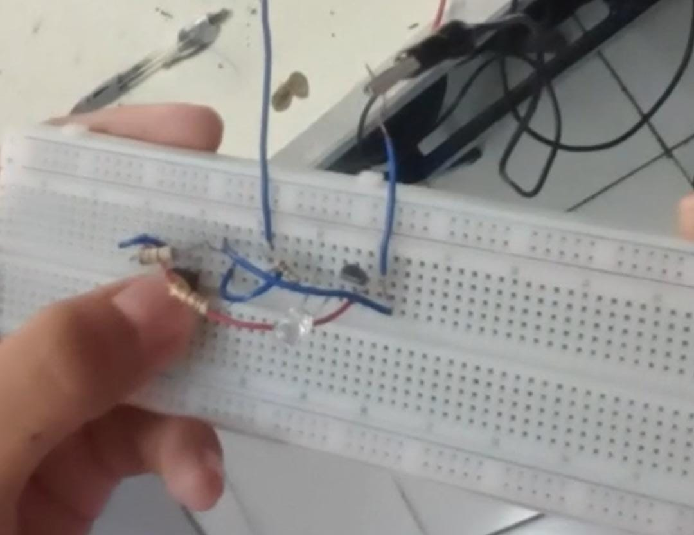
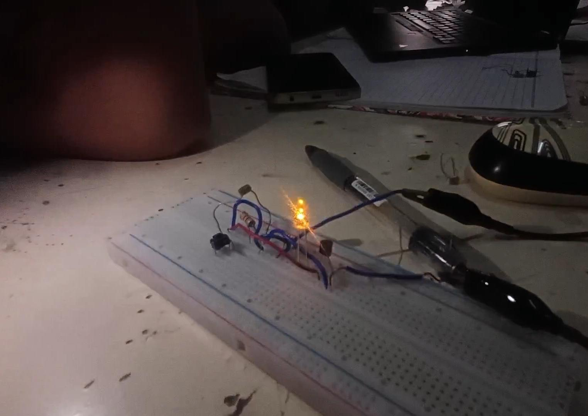
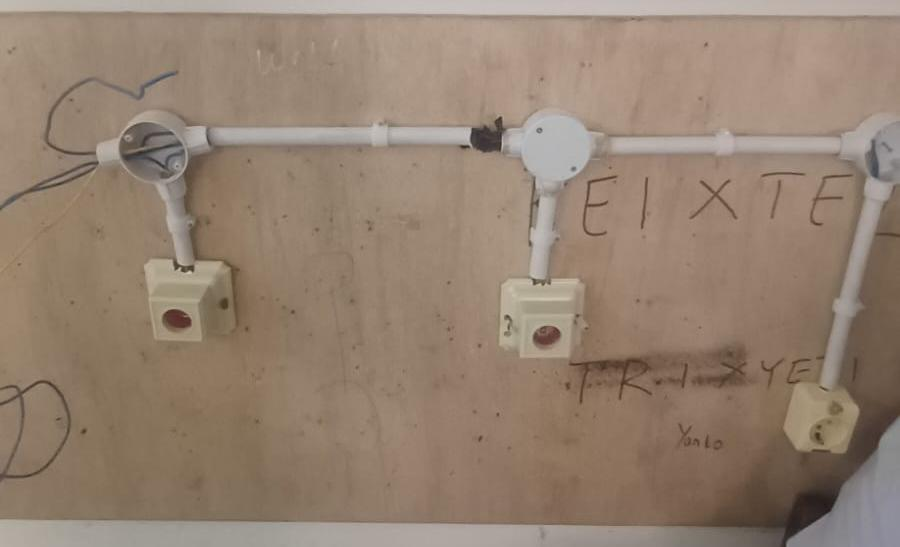
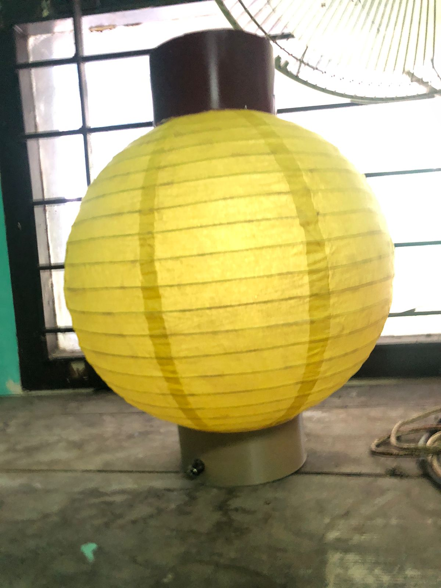

Kumpulan karya dan proyek yang dikerjakan selama menempuh pendidikan di SMKN 7 Semarang, Jurusan Teknik Elektronika Komunikasi.

Projek pertama dalam pembelajaran elektronika dasar, membuat Rangkaian Transistor sebagai Saklar .
01
Rangkain Transistor sebagai Lampu Taman Otomatis menggunakan LDR
02
Instalasi saklar ganda menggunakan papan kayu
03
membuat rangkaian dimmer 12 v dan casing menggunakan lampion bekas pipa paralon dan filamen bekas
03